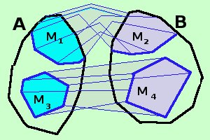

Proprio per essere pignoli:
- Applicazione indica il passaggio da A a B termine a termine: per ogni elemento di A parti dal termine a ed arrivi al termine corrispondente b
Viene utilizzato preferibilmente in insiemi finiti
- Funzione indica il legame totale che c'e' fra A e B
viene preferibilmente usata per insiemi infiniti (soprattutto in analisi)
- Corrispondenza univoca indica la corrispondenza tra un elemento di A ed un elemento di B per tutti gli elementi dell'insieme A: cioe' invece di considerare un passaggio consideri una "corrispondenza" mettendo gli elementi di A e di B sullo stesso piano
- Operatore indica il blocco (operazione) che trasforma gli elementi dell'insieme A nell'insieme immagine in B: in pratica se B e' il trasformato di A l'operatore "ingoia" l'insieme A e "risputa" l'insieme B (non usiamo termini peggiori)
- Mappa, usata di solito per insiemi infiniti, indica la trasformazione dell'insieme A come estensione (mappa) nel supporto dell'insieme immagine in B: in pratica se considero "un pezzo", "un ritaglio" di A esso viene trasformato in "un pezzo" di B (naturalmente vale per ogni "pezzo" di A che considero).

In figura M1 viene trasformata in M2 ed M3 viene trasformata in M4
|